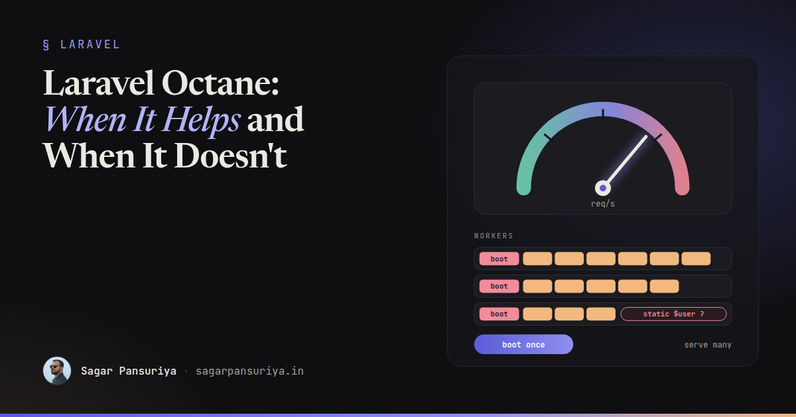
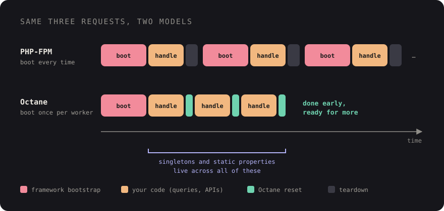

Laravel Octane: When It Helps and When It Doesn't


Every few months someone on a team suggests Octane. The app feels slow, a blog post promised big throughput numbers, and installing it takes five minutes. So it goes in. Sometimes the app gets noticeably faster. Sometimes nothing changes, except that a week later a user sees another user's name in the header and nobody can reproduce it.
Both outcomes are predictable once you understand what Octane actually changes. This post covers how it works, where the speedup comes from (and where it can't come from), the state leakage bugs that bite teams, how to measure before and after, and a checklist for deciding whether it's worth it for your app.
How Octane works
In a traditional PHP-FPM setup, every request starts from nothing. PHP loads Composer's autoloader, Laravel creates the application, reads configuration, registers and boots every service provider, loads routes, handles the request, sends the response, and throws the whole thing away. The next request does it all again.
Octane keeps the application in memory. It runs a small number of long-lived worker processes on an application server, currently FrankenPHP, Swoole (or Open Swoole) or RoadRunner. Each worker boots Laravel once, then serves request after request from that already-booted application. Between requests, Octane gives each request a fresh sandboxed copy of the application and resets a lot of framework state for you.

Getting started really is quick:
composer require laravel/octane
php artisan octane:install # choose FrankenPHP, Swoole or RoadRunner
# local development, restarting workers when files change
php artisan octane:start --watch
# production-style: fixed worker count, recycle workers periodically
php artisan octane:start --workers=4 --max-requests=500That ease is part of the problem. It's easy to install without asking whether the app needs it.
Where the speedup comes from
Octane removes one thing: the per-request bootstrap. Everything your code does after the framework is ready still happens at the same speed. Your database queries, HTTP calls to third-party APIs, Blade rendering and business logic don't get any faster because the worker is warm.
So the benefit depends on what fraction of a request is bootstrap. Some illustrative numbers, not benchmarks, to show the shape of it:
| Request | Bootstrap | Your code | Effect of Octane |
|---|---|---|---|
| Small JSON endpoint, one indexed query | A large share | A few ms | Big relative gain |
| Typical dashboard page | A moderate share | Tens of ms | Noticeable |
| Report with a slow query | Tiny share | Hundreds of ms | Barely measurable |
| Page waiting on a third-party API | Tiny share | Whatever the API takes | None |
Two other factors shrink the gap. If you already run OPcache and php artisan optimize (cached config, routes, events and views) on FPM, bootstrap is already much cheaper than on an unoptimised app. And the more packages and providers you have, the more there is to skip, so a heavy app gains more than a lean one.
Where Octane really shines is throughput under load: many fast requests per second, like APIs serving mobile apps, high-traffic endpoints, or Livewire apps sending lots of small updates. Fewer CPU cycles per request means the same server handles more of them.
When it won't help
If your slow pages are slow because of the database, Octane is the wrong tool. Look for N+1 queries, missing indexes and unbounded result sets first. If they're slow because of external calls, cache the responses or move the work to a queue (see my post on queues and Horizon in production). If they're slow in the browser, that's a frontend problem, and INP and rendering fixes will matter far more than shaving server milliseconds.
In most projects I've worked on, the honest answer to "should we add Octane?" is "not yet": there were cheaper fixes with bigger payoffs sitting in the query log.
The catch: state that outlives a request
In FPM, sloppy state management is forgiven because everything dies at the end of the request. In Octane, anything stored on a long-lived object survives into the next request, which may belong to a different user. The Laravel docs call out the main patterns; here's what they look like in practice.
1. Injecting the request into a singleton
// AppServiceProvider::register() — problematic under Octane
$this->app->singleton(TenantResolver::class, function (Application $app) {
return new TenantResolver($app['request']);
});If TenantResolver is resolved during the first request, it holds on to that request object forever. Every later request in that worker resolves the same tenant. The fixes, in order of preference:
// a) Pass what you need at call time
$tenant = $resolver->resolve($request->getHost());
// b) Inject a resolver closure instead of the value
$this->app->singleton(TenantResolver::class, function (Application $app) {
return new TenantResolver(fn () => $app['request']);
});
// c) Or don't make it a singleton: scoped bindings are reset per request
$this->app->scoped(TenantResolver::class, function (Application $app) {
return new TenantResolver($app['request']);
});The same applies to injecting the container itself or the config repository into a singleton that's constructed early. The object ends up holding a stale reference.
2. Static properties and caches that only grow
class PriceFormatter
{
private static array $cache = [];
public function format(Product $product): string
{
return static::$cache[$product->id] ??= $this->expensiveFormat($product);
}
}Under FPM, harmless. Under Octane, two problems: prices change but the cached string doesn't, and the array grows with every product ever viewed until the worker is recycled. Any static property, and any property on a singleton, should be treated as shared across users and requests. Use the cache store, a scoped binding, or plain local variables instead.
3. Per-user data on long-lived services
The dangerous version: a singleton that stores the current user, locale or cart on a property during one request. The next request on that worker sees the previous user's data if it reads the property before setting it. This is the "wrong name in the header" bug from the start of the post. It's rare, depends on which worker gets which request, and is nearly impossible to reproduce locally with one worker.
4. Packages you don't control
Most popular first-party and well-maintained packages are Octane-aware now, but not all. Before switching, grep your vendor/ directory for singletons and static state in packages that touch auth, tenancy, locale or permissions, and check each package's docs or issues for Octane notes. Octane's config file also has warm and flush lists for services you want pre-resolved or discarded between requests.
Memory: expect it to creep
A long-running PHP process accumulates memory: static caches, event listeners registered at runtime, objects kept alive by closures. That's why Octane recycles each worker after a set number of requests with --max-requests. Treat it as a safety net, not a fix.
Watch worker memory on staging under realistic traffic for a few hours. Flat or sawtooth (rising, then dropping on recycle) is fine. A steady climb that hits your server's limits before recycling kicks in means something is leaking, usually one of the static patterns above.
Measure before and after
Don't decide on vibes, and don't benchmark on your laptop. Use a staging server that matches production, with OPcache on and php artisan optimize run in both setups, so you're comparing Octane against a properly configured FPM rather than a straw man.
- Pick three to five real endpoints: your busiest API route, a typical authenticated page, and one known-slow page.
- Load test each with a tool like
wrk,ohaor k6 at a concurrency close to your real peak. - Record p50, p95 and requests per second, plus CPU and memory on the server.
- Switch to Octane with a sensible worker count (start near your CPU core count), and repeat the exact same runs.
# 30 seconds, 4 threads, 50 open connections, with latency percentiles
wrk -t4 -c50 -d30s --latency https://staging.example.com/api/productsThen look at real users. A server-side improvement that shaves a few milliseconds off a page with a slow query won't show up in field data at all, and that's a useful answer too.
Running it in production
- Run Octane under a process manager like Supervisor or systemd, so crashed workers come back. Managed Laravel hosting platforms can do this for you.
- Put a web server or proxy in front for TLS and static files unless your chosen server handles it (FrankenPHP, built on Caddy, can serve both).
- After every deploy, run
php artisan octane:reload. Workers hold the old code in memory until they restart; forgetting this is a classic "my fix isn't live" moment. - Keep features that are exclusive to one server, such as Swoole's concurrent tasks and tables, out of the codebase unless you're committed to that server long term.
A checklist for deciding
- Have you already fixed N+1s, missing indexes and slow external calls? If not, do that first.
- Is OPcache on and
php artisan optimizepart of every deploy on FPM? - Is your bottleneck CPU spent per request under high concurrency, rather than I/O?
- Have you audited your singletons, static properties and service providers for request or user state?
- Have you checked the packages that touch auth, tenancy, locale or permissions for Octane support?
- Have you load tested real endpoints on production-like hardware, before and after?
- Do you have memory monitoring on workers and a sensible
--max-requests? - Does your deploy script reload workers?
If you can tick all eight and the numbers improved, Octane is a great tool: more requests from the same hardware, with snappier fast endpoints. If you can't, the problem it solves probably isn't the problem you have yet, and that's worth knowing before you ship a subtle bug to production.
Discussion